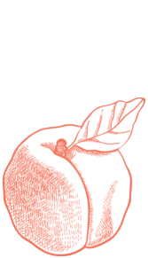
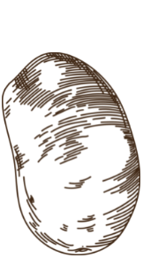
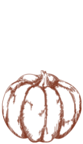

Yellow corn can be roasted, grilled, blanched, steamed, or pureed. Sold by the case, you can stock up on this delicious vegetable for fall recipes or can them for later.

PEACHES
Peaches are perfect for jams, cobblers, marinades and so much more! Sold by the case, you can stock up on these delectable fruits while they are in season.

POTATOES
Fantastic for mashing and baking, our Idaho grown Russet Potatoes are here! Sold by the case, you can stock up on this hardy vegetable, ready for this year's holiday dinners.

PUMPKINS
Our pumpkins are fantistic for fall crafts and home decor. Orange and white pumpkins of varying sizes will be sold individually at a C-A-L Ranch store near you. (Please note these pumpkins are not edible)
VISIT C-A-L RANCH ON SOCIAL
Follow us for cooking inspiration, recipes from some of the most loved brands like Camp Chef, Tabasco, and Hey Grill Hey!